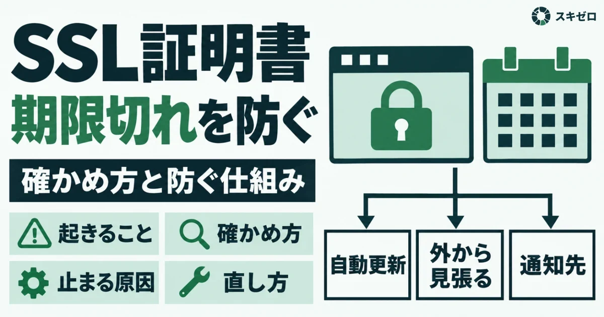
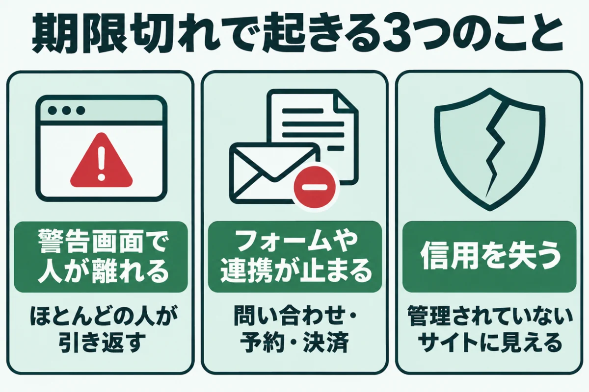
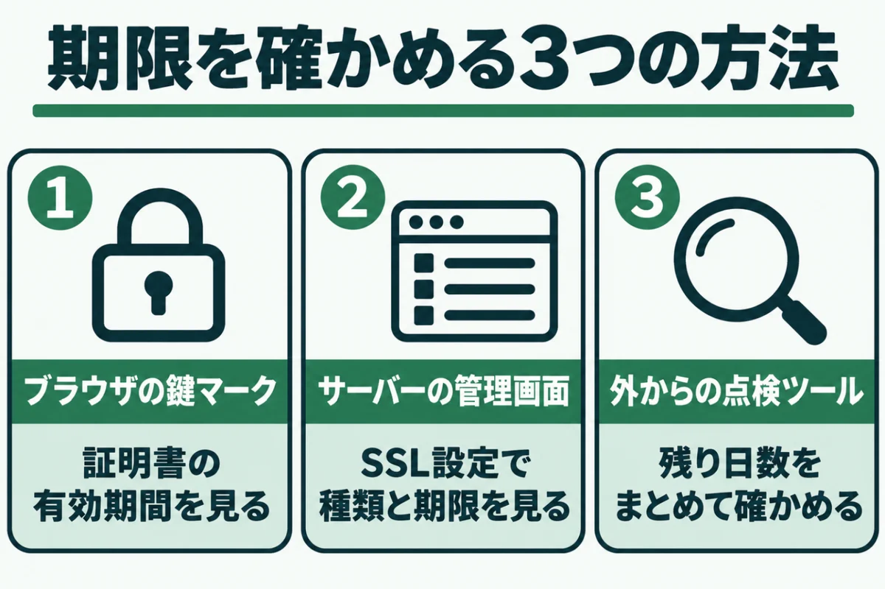
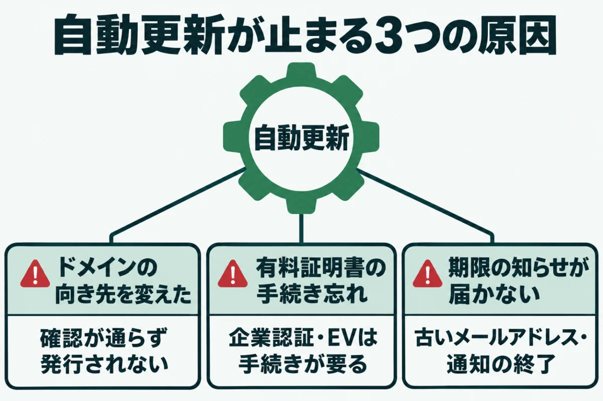
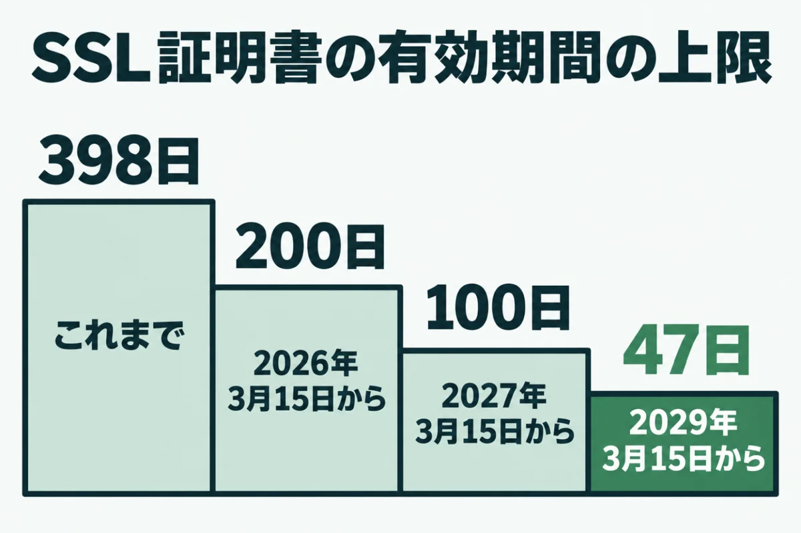
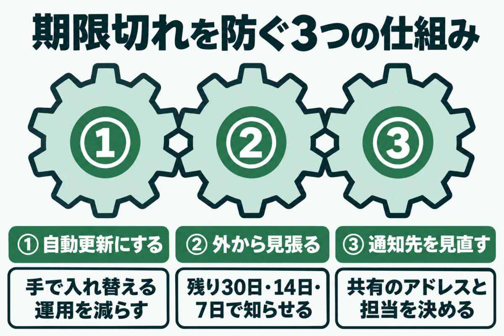
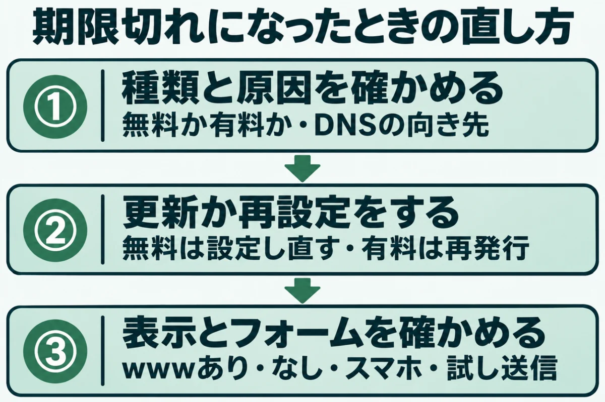

SSL証明書の期限切れを防ぐ方法と確認のしかた有効期間は47日へ短くなる

「SSL証明書が切れたらどうなる？」「自動更新で本当に大丈夫？」と気になっていませんか？
証明書が切れると、訪れた人のブラウザに大きな警告が出て、サイトはほとんど開いてもらえなくなります。しかも、期限は持ち主が気づかないうちに静かに近づいてくるものです。
この記事では、SSL証明書の期限切れを防ぐ確かめ方と仕組みを整理しました。切れてしまったときの直し方もまとめています。
参照したのは、エックスサーバーとLet's Encryptの公式の案内です。2026年11月14日に内容を確かめました。このサイトの無料簡易診断の判定の決め方も紹介します。
SSL証明書が期限切れになると起きること

SSL証明書の期限切れは、サイトの中身が壊れていなくても起こる、入口の問題です。証明書は、ブラウザとサイトの間の通信を守る身分証のような役割を持っています。ところが、期限切れの影響はサイト全体に及ぶのです。
期限を1日過ぎただけで、ほとんどの訪問者が先へ進めなくなります。何が起きるのかを、3つに分けて確かめてください。
ブラウザに警告画面が出て人が離れる
期限が切れたサイトを開くと、ブラウザは中身を表示する前に、全面の警告画面を出します。「この接続ではプライバシーが保護されません」といった表示です。
先へ進むには、ふだん見かけない小さなリンクを押す必要があります。ほとんどの人は、そこで引き返してしまうのです。
検索から来た人も、広告から来た人も、同じ画面で止まります。集客のための費用も、そのまま無駄になるでしょう。広告を出しているなら、期限切れの間は配信を止めることも考えてください。
お問い合わせやメールの仕組みも止まる
影響は、画面の表示だけではありません。お問い合わせフォームの送信や、外部のサービスとのやり取りも、証明書のエラーで止まることがあります。
決済や予約のサービスは、安全につながらない相手との通信を断る作りが一般的です。表から見えないところで注文や予約が失われるおそれもあります。
メールの送受信に同じ証明書を使っている場合は、メールソフトにも警告が出るのです。気づいたときには、何日分もの問い合わせが届いていなかったということもありえます。
「放置されたサイト」と見られる
警告画面は、訪れた人に「このサイトは管理されていないのでは」という印象を与えます。会社の顔であるホームページで、信用を落とすのは避けたいところです。
直したあとも、一度警告を見た人がすぐに戻ってくるとは限りません。期限切れは、切れる前に防ぐのがいちばん安上がりです。
警告の原因が、期限切れ以外のこともあります。「保護されていない通信」と表示される原因と直し方も参考にしてください。
SSL証明書の期限切れに備えて期限を確かめる3つの方法

SSL証明書の期限は、特別な道具がなくても確かめられます。期限切れを防ぐ第一歩は、今の状態を知ることです。まずは、自分のサイトの証明書がいつまで有効かを知ることから始めてください。
期限の日付と、自動で更新されるかどうかの2つが分かれば十分です。確かめ方を、手軽な順に3つ紹介します。どれも、数分あれば終わる作業でしょう。
① ブラウザの鍵マークから見る
いちばん手軽なのは、ブラウザで自分のサイトを開いて確かめる方法です。アドレスバーの左にあるマークを押し、「この接続は保護されています」から証明書の情報を開きます。
表示された画面の「有効期間」の欄に、いつからいつまで有効かが書かれているはずです。「有効期限」の日付をメモしておくと、次に確かめる時期の目安になります。
ブラウザによって表示の名前が少し違いますが、見る場所はほぼ同じです。スマホでは見られないことが多いので、パソコンで確かめてください。
② サーバーの管理画面で見る
レンタルサーバーを使っているなら、管理画面のSSLの設定画面でも確かめられます。エックスサーバーなら、サーバーパネルの「SSL設定」です。
この画面では、期限の日付に加えて、証明書の種類も分かります。無料の証明書か、有料の証明書かによって、更新のされ方が違うからです。
複数のドメインを持っているなら、一覧で一度に見比べられるのも助かる点でしょう。期限の近いものから順に確かめてください。期限の日付は、表にして残しておくと次に見比べやすくなります。
③ 外からの点検ツールで見る
このサイトの無料簡易診断でも、SSL証明書の残り日数を確かめています。URLを入れるだけで、ほかの7項目と一緒に判定する仕組みです。
判定は、残りが14日以上ならA、14日未満ならC、7日未満ならDにしています。期限が切れているか、証明書にエラーがあればEです。
複数のサイトを持っているなら、月に1度まとめて確かめると見落としを防げます。判定の理由が分かるよう、結果には残り日数も添えました。
SSL証明書の自動更新が止まって期限切れになる原因

多くのレンタルサーバーの無料の証明書は、自動で更新される仕組みです。エックスサーバーの無料独自SSLも、有効期間は90日で、自動で更新されます。
それでも期限切れが起きるのは、自動更新の前提が、知らないうちに崩れているからです。よくある原因を3つ挙げます。自分のサイトに当てはまらないか、確かめながら読んでください。
ドメインの向き先を変えた
無料の証明書は、更新のたびに「このドメインはこのサーバーのものか」を確かめて発行されます。DNSの設定を変えて別のサービスに向けると、この確認が通らなくなるのです。
エックスサーバーのマニュアルも、wwwあり・なしの両方がサーバーを向く必要があるとしています。メールを移したつもりが、サイトの向き先まで変わっていたという例も珍しくないのです。
DNSを触ったあとは、数日おいて証明書の期限が延びているかを確かめておきましょう。
有料の証明書の手続きを忘れた
有料の証明書は、種類によって更新の手続きが要ります。企業の実在を証明する種類の証明書は、自動では延長されないものが一般的です。
エックスサーバーは、企業認証とEVの証明書について、期限の35日前を目安に案内を送るとしています。担当者が辞めて、そのメールを誰も読んでいなかったという例は珍しくありません。
契約の更新と、証明書の更新が別の手続きになっている場合もあるので注意してください。契約の担当とサイトの担当が別の人なら、なおさら確かめておきましょう。
期限の知らせが届かない
Let's Encryptは、以前は期限が近づくとメールで知らせていました。しかし、この知らせは2025年6月4日で終わっています。自分で証明書を入れていたサイトでは、知らせが来なくなったことに気づきにくいのです。
サーバー会社の通知も、登録したメールアドレスが古ければ届きません。知らせが来ないことを、問題がないことと取り違えないようにしてください。
制作会社に管理を任せている場合も、通知が誰に届いているかを一度確かめておきましょう。
SSL証明書の有効期間が短くなり期限切れが起きやすくなる

SSL証明書の期限切れは、これから起きやすくなります。証明書の有効期間の上限が、段階的に短くなるためです。更新の回数が増えれば、どこかで止まる機会もそれだけ増えるでしょう。
2029年3月15日以降に発行される証明書は、最長47日になります。日程と、持ち主への影響を、順に確かめてください。いま使っている証明書の種類を思い浮かべながら読むと、分かりやすいはずです。
200日、100日、47日の順に短くなる
エックスサーバーの案内によると、証明書の最大の有効期間は、これまで398日でした。2026年3月15日以降は200日、2027年3月15日以降は100日に短くなります。
そして、2029年3月15日以降は47日です。1年に1回の更新が、1年に8回ほどに増える計算になります。
これは、証明書の業界の決まりを定める団体の方針によるものです。新しい期間は、その日以降に発行される証明書から当てはまります。今の証明書が、すぐに切れるわけではありません。
無料の証明書も45日に短くなる
Let's Encryptも、いまの90日から、2028年までに45日へ短くすると発表しました。2027年2月10日には、標準の証明書が64日になる予定です。
多くの利用者は何もしなくてよいとしつつ、自動更新が短い期間に対応しているかの確認を求めています。手で更新する運用は勧められない、という立場です。
更新の時期を自動で教える仕組み（ARI）を使うことも勧めています。レンタルサーバーの利用者なら、この対応はサーバー会社の仕事です。
手で更新する証明書ほど負担が増える
レンタルサーバーの無料の証明書を使っているなら、多くの場合は自動のまま対応できるでしょう。エックスサーバーも、無料独自SSLはこれまでどおり自動で更新すると案内しています。
負担が増えるのは、有料の証明書を手で入れ替えている場合です。年に1回の作業のつもりでいると、すぐに期限が来てしまうでしょう。
いまのうちに、自動更新できる形に変えられないか、サーバー会社に相談しておくと安心です。制作会社が管理しているなら、その会社にも聞いてみてください。
SSL証明書の期限切れを防ぐ仕組みの作り方

SSL証明書の期限切れの多くは、仕組みで防げます。基本は、自動で更新し、その結果を外から見張ることです。人の記憶に頼る運用は、更新の回数が増えるほど破れやすくなります。
自動に任せる部分と、人が見る部分を分けておくのがこつです。作り方を3つに分けて紹介します。どれも、一度決めてしまえば手間はほとんどかかりません。
できるだけ自動更新の証明書にする
会社案内のサイトなら、レンタルサーバーの無料の証明書で足りることがほとんどです。自動で更新されるので、手で入れ替える手間がかかりません。
有料の証明書が必要な場合も、サーバー会社が更新を代行してくれるかを確かめます。自分で証明書のファイルを入れ替える運用は、できるだけ減らすのが安全です。
ドメインやDNSを別の会社で管理しているなら、向き先を変える前に証明書への影響を聞きましょう。
期限を外から見張る
自動更新に任せていても、更新が失敗していないかは外から確かめておきましょう。Let's Encryptも、更新に失敗したときに知らせが届く見張りの仕組みを勧めているのです。
見張りの道具には、期限の何日前に知らせるかを決められるものがあります。残り30日、14日、7日のように段階を分けて知らせると、慌てずに済むはずです。
道具を使わない場合は、月に1度、この記事の確かめ方で期限を見る日を決めておくとよいでしょう。
通知先と担当を見直す
サーバー会社やドメインの会社からの知らせが、誰のメールに届くかを確かめます。ドメインの会社とサーバーの会社の、両方の登録を見てください。辞めた人や、使っていないアドレスに届いていないでしょうか。
会社で使うなら、個人ではなく、複数の人が読める共有のアドレスにしておくと安心です。誰が見て、誰が直すかを決めておくと、知らせが来たときに止まりません。
制作会社に任せている場合も、期限の確認を契約に含めてもらうと抜けが減ります。
SSL証明書が期限切れになったときの直し方

もし期限が切れてしまっても、多くの場合はその日のうちに直せます。警告が出ている間も訪問者は離れていくので、早めに手を打ちたいところです。慌てて設定を変える前に、どの証明書が切れたのかを確かめてください。
証明書の種類と、更新が止まった原因が分かれば、直す場所は決まるはずです。直す場所を間違えると、時間だけが過ぎてしまいます。順番に見ていきましょう。
無料の証明書が切れたとき
まず、DNSの向き先が今のサーバーになっているかを確かめます。向き先が正しければ、管理画面で設定し直すと、新しい証明書が発行されることが多いのです。
エックスサーバーのマニュアルにも、設定の追加と、他社のサーバーでの確認の方法が載っています。向き先が違うまま設定し直しても、発行は通らないので注意してください。
反映までに時間がかかることもあるので、少し待ってから表示を確かめましょう。
有料の証明書が切れたとき
有料の証明書は、契約しているサーバー会社や販売店で、更新の手続きと再発行を行います。手続きのあと、新しい証明書をサーバーに入れる作業が必要な場合もあるのです。
企業の実在の確認が要る種類は、発行まで日数がかかることがあります。急ぎのときは、いったん無料の証明書に切り替える方法も、サーバー会社に相談してみてください。
サイトシールを貼っている場合は、表示が古いままになっていないかも確かめます。再発行に費用がかかるかは契約によって違うので、確かめておきましょう。
直したあとに確かめること
証明書を入れ替えたら、パソコンとスマホの両方で、wwwあり・なしのアドレスを開いて確かめます。お問い合わせフォームから、試しに1件送っておくと安心です。
あわせて、なぜ切れたのかを記録し、同じことが起きない仕組みに直しておきます。直したあとの外からの点検には、このサイトの無料簡易診断も役に立つでしょう。
点検の種類の違いは、ホームページのセキュリティ診断とは？無料と有料の違いと選び方で紹介しました。
URLを入れるだけで、SSL証明書の残り日数やPHPの版など8項目を無料で判定します。登録はいりません。
無料で診断するSSL証明書の期限切れに関するよくある質問
SSL証明書の期限が切れても、サイトは見られますか？
多くのブラウザは、期限が切れたサイトを開く前に警告画面を出します。詳細を開いて先へ進めば見られることもあるものの、ほとんどの訪問者はそこで引き返すのです。
そのため、実際には「見られない」のとほぼ同じと考えてください。フォームの送信や外部サービスとの連携も止まることがあります。気づいたら、何より先に直すことを優先しましょう。
無料のSSL証明書は、有料のものより危ないのですか？
通信を守る仕組みそのものは、無料でも有料でも変わりません。違いは、運営している組織の実在を証明するかどうかや、補償などの付いてくるものになります。
会社案内のサイトなら、無料の証明書で足りることがほとんどです。自動で更新されるので、期限切れを防ぐ点ではむしろ扱いやすいでしょう。個人情報を多く扱うサイトでは、運営元を示せる有料の証明書を選ぶ会社もあります。
自動更新にしていれば、何もしなくて大丈夫ですか？
自動更新は、DNSの向き先などの前提が保たれている間だけ働きます。向き先を変えたり、サーバーを移したりすると、知らないうちに止まることがあるのです。
月に1度は外から残り日数を確かめ、減り続けていないかを見てください。残りが30日を切っても増えないなら、更新が止まっているサインです。サーバーを移したあとは、特に気をつけてください。
SSL証明書の有効期間が短くなると、費用は上がりますか？
無料の証明書は、有効期間が短くなっても費用はかかりません。有料の証明書は、契約の期間と証明書の期間が分かれる形で、追加の費用なしに再発行する会社もあるのです。
エックスサーバーも、有効期間の短縮に合わせた再発行に追加の費用はかからないと案内しています。ほかの会社の場合は、契約先に確かめてください。手で入れ替える作業を頼んでいるなら、その手間賃が増えることも考えられます。
証明書の期限は、どのくらいの間隔で確かめればいいですか？
自動更新の証明書なら、月に1度確かめれば十分なことが多いでしょう。有効期間が短くなっていくので、年に1度の確認では間に合わなくなるのです。
複数のサイトを持っているなら、一覧で見られる見張りの道具を使うと手間が減ります。自分で続けるのが難しければ、定期的な点検を任せる方法もあるのです。有料の証明書を手で更新しているなら、期限の1か月前には予定に入れておいてください。
まとめ
SSL証明書の期限が切れると、警告画面でほとんどの訪問者が離れ、フォームや連携も止まります。まずは、ブラウザやサーバーの管理画面で、期限の日付と更新の仕組みを確かめてください。
有効期間は2029年に向けて短くなっていきます。自動更新に任せたうえで、外から期限を見張る形に整えておきましょう。
切れてしまったときは、証明書の種類と原因を確かめてから、直す場所を決めてください。
まずは、今の状態を知るところから。
URLを入れるだけで、数十秒で判定が出ます。登録はいりません。